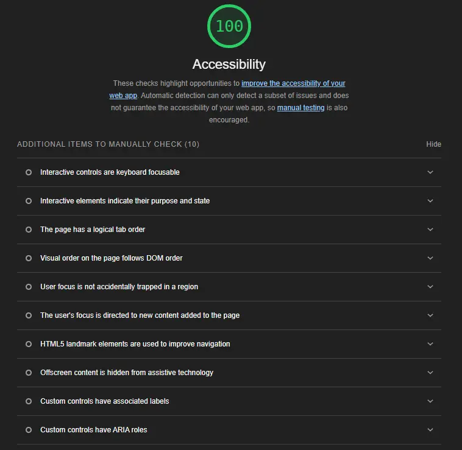

Accessability is mandated by law in Norway. As such there are certain standards that needs to be upheld for our page design. Currently lighthouse seems to think our site is upholding accessability standards quite well. However lighthouse can miss some things.
